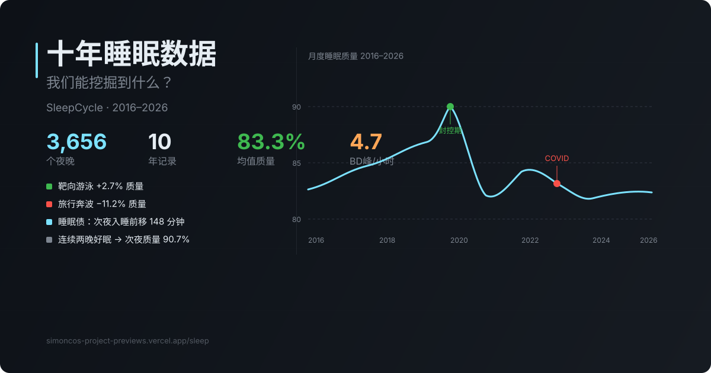

Projects
/
1 maintained public project
Maintained /
Updated May 20, 2026
01
Featured project · maintained
Sleep Toolkit
From raw records to readable reports.
A maintained tool that turns long-running SleepCycle exports into structured JSON, interactive HTML reports, and PDF outputs. Private by design, running locally with full data ownership.
Sleep report · May 2025
Report preview

Nights
3,656
Years
10
Outputs
JSON · HTML · PDF
Input
SleepCycle CSV exports and long-running personal sleep records.
Apple Health data · 10 years
Output
JSON · interactive report · PDF.
JSON · Interactive HTML · PDF
Connected artifacts
Ten-year sleep visual essay
1 item
Next question
How should personal data tools explain uncertainty, habits, and behavior change without pretending to be medical advice?
Read data essay
Project surfaces
A
Sleep Toolkit web app
Upload a SleepCycle CSV and generate structured analysis outputs.
Open Sleep Toolkit
B
Ten years of sleep records
The long-form narrative and data story that explains the project context.
Read data essay
Project ledger
01
Sleep Toolkit
From raw records to readable reports.
Maintained
A maintained public tool for SleepCycle exports: upload a CSV and generate structured JSON, an interactive HTML report, and a PDF.
Open Sleep Toolkit